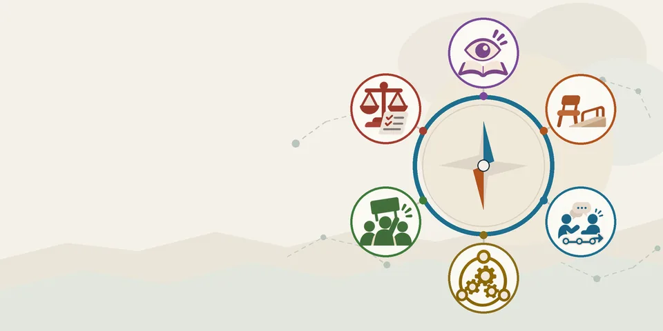

情境是高齡者的共居生活。先抽一張情境卡，選出你們要處理的社會問題，再回答 24 題，看看比較適合從哪個方向介入。約 10–15 分鐘，建議全組一起討論。
資料只存在這支手機的瀏覽器裡，不會上傳。作答完會產生一個 QR code 和一組備援代碼，請截圖交給老師。
先選一個領域，抽出一位住在園館裡的人。讀完他的故事，再決定你們要處理哪個社會問題。
情境人物與規定皆為虛構。現實是否成立，由你們自己查證。
共 3 次機會，最後一次抽到的卡就是你們的卡。稀有度只是好玩，和內容、成績都無關。
這些都是這張卡可以討論的問題，沒有哪個比較對。也可以自己寫。
對照你們寫的那一句話，符合的打勾。提醒用，不打勾也能繼續。
作答時請依「這個問題實際需要什麼」判斷，不是「我們想做什麼」。
請截圖這一區（QR code 和下面的代碼都要拍進去）交給老師。老師用手機相機掃描就能看到你們的結果。
掃不了的備援代碼：
圖形以你們六個方向的平均為中間環，放大了方向之間的差距；旁邊的數字是原始得分。看的是相對高低，不是絕對值。
方向與題目由課程自編，並非引用既有量表，也沒有做過信效度檢驗。結果是討論的起點，不是診斷。